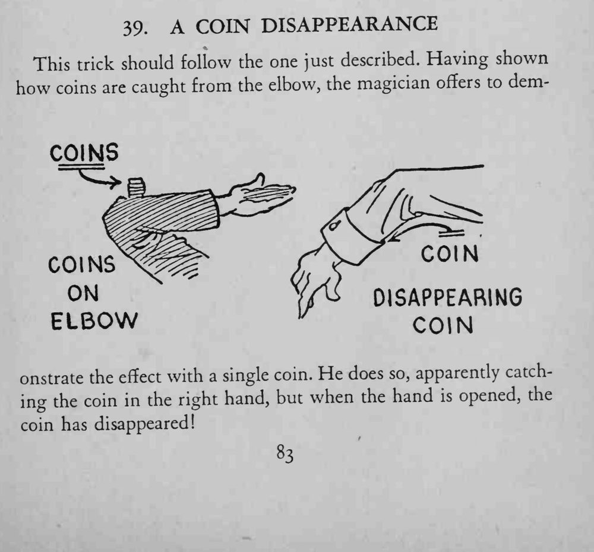
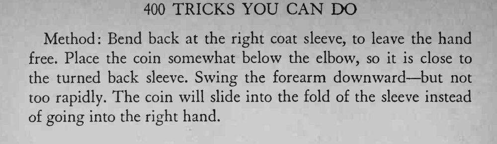

前一个节目之后，用单枚硬币再演一次：右手明明接住了硬币，张开手却不见踪影。
挥臂不能太快，否则硬币会直接落进手里；袖口折边要够深，才接得住硬币。


This trick should follow the one just described. Having shown how coins are caught from the elbow, the magician offers to demonstrate the effect with a single coin. He does so, apparently catching the coin in the right hand, but when the hand is opened, the coin has disappeared! Method: Bend back at the right coat sleeve, to leave the hand free. Place the coin somewhat below the elbow, so it is close to the turned back sleeve. Swing the forearm downward but not too rapidly. The coin will slide into the fold of the sleeve instead of going into the right hand.